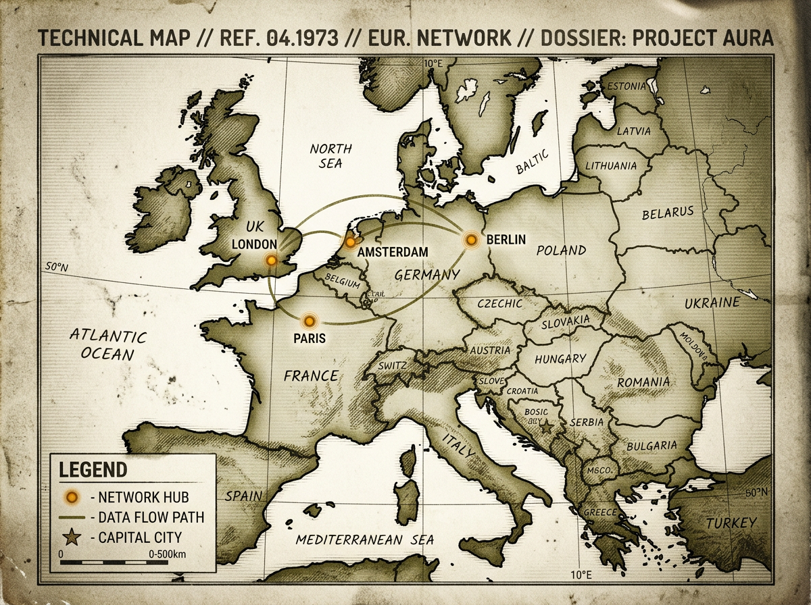

In late July, we published a piece called "The Phantom and the Intern" — a dispatch about two humanoid robots and the futures they implied. The Phantom MK1, built by Foundation Future Industries, was being tested with Ukrainian forces. The 1X Neo, built in San Francisco, was folding laundry and opening doors in an office. The split was clean. The soldier and the intern. The weapon and the helper. Two weeks later, that split is no longer theoretical. It has a price tag, a launch date, and a shipping address in Europe.
On July 22, 2026, Unitree Robotics — the Hangzhou-based company best known for its quadruped robots — launched the H2 humanoid for commercial sale in Europe. The price: $29,900. The timing: less than a month after the Pentagon added Unitree to its Section 1260H list of Chinese military-linked companies. The humanoid industry's two futures — the battlefield and the living room — are now arriving on the same shipping container, and the container has a Chinese return address.
The H2 Landing
The Unitree H2 is not a research prototype. It is a product with a spec sheet, a warranty, and a checkout page. Standing 1.8 meters tall and weighing 70 kilograms, the H2 walks at 1.5 meters per second, carries a payload of up to 30 kilograms, and runs for approximately two hours on a single charge. Its hands have 12 degrees of freedom — fewer than 1X's Neo and its 25-DOF hands, but enough for the kind of general-purpose manipulation that makes a humanoid useful outside a lab.
The European launch began with commercial sales in Germany, France, and the Netherlands, with Asia and North America to follow. Unitree has framed the H2 as a platform for research, light industry, and service applications. The company's marketing materials show the robot carrying boxes, opening doors, and navigating warehouse environments. Nothing in the promotional video suggests a weapon. Nothing in the price tag suggests a military procurement program. The H2 costs less than a Tesla Model 3. It costs less than most industrial robot arms. It costs less than the annual salary of the warehouse worker it is designed to replace.
The H2's price point is the house. At $29,900, Unitree is not selling to generals. It is selling to universities, logistics companies, small manufacturers, and — eventually — to anyone with a garage big enough to store a human-sized machine. The same price curve that put a quadcopter in every hobbyist's backpack is now bending toward humanoids. The question is what happens when the hobbyist can afford a robot that can walk, carry, and manipulate objects with two hands. The answer depends on who built it.
The Pentagon's List
In June 2026, the U.S. Department of Defense added Unitree Robotics to the Section 1260H list — the statutory roster of Chinese military companies operating directly or indirectly in the United States. The designation does not ban Unitree from selling products in the U.S., not yet. But it is the first formal step toward export controls, investment restrictions, and procurement bans. It is the Pentagon saying, in the language of statute: this company answers to a military chain of command.
Unitree's response was swift and consistent with the playbook. The company stated that it is a commercial robotics firm with no military affiliations, that its products are designed for civilian applications, and that the Pentagon's designation is a political move untethered from evidence. The statement was issued from Hangzhou, where Unitree's headquarters sit inside the same industrial ecosystem that produces drones for the People's Liberation Army. The distinction between commercial and military in that ecosystem has always been porous. The Section 1260H designation is the Pentagon's way of saying it no longer believes the distinction exists at all.
The timing of the H2's European launch — weeks after the 1260H designation — is unlikely to be a coincidence. Unitree knew the designation was coming. The company had been under Pentagon review for months. The European launch was the countermove: get the product into Western markets before the regulatory walls go up. Europe, for now, is the path of least resistance.
The European Door
Why Europe? The answer is regulatory geography. The EU AI Act's provisions for high-risk robotics systems do not fully take effect until 2027. Until then, humanoid robots — even those capable of autonomous navigation and physical manipulation — fall into a regulatory gap. They are not consumer products in the traditional sense, and they are not industrial machinery subject to existing safety directives. They are a new category, and the law has not caught up.
The United States, by contrast, is hardening. The Section 1260H list is one front. The Committee on Foreign Investment in the United States (CFIUS) is another. Export controls on advanced robotics components — actuators, sensors, AI training hardware — are expanding. A Chinese humanoid company trying to sell directly into the U.S. market in 2026 faces a gauntlet of national security reviews, each of which can kill a deal without explanation. Europe, for all its regulatory ambition, is still writing the rules. Unitree is walking through the door before it closes.
The European strategy is not unique to Unitree. Chinese robotics firms have been using Europe as a beachhead for Western market entry for years. DJI did it with drones. BYD is doing it with electric vehicles. The pattern is consistent: launch in Germany or the Netherlands, build a commercial presence, accumulate case law and regulatory precedent, and then use that foothold to argue for market access elsewhere.
What makes the humanoid case different is the dual-use nature of the hardware. A drone is a drone. A car is a car. A humanoid robot that can walk, carry, and manipulate objects is a logistics platform on Monday and a weapons platform on Tuesday. The same hands that stack boxes can hold a rifle. The same vision system that navigates a warehouse can track a target.

The European Commission is aware of the gap. Internal discussions about fast-tracking robotics provisions under the AI Act have accelerated since the H2 launch. But the European regulatory machinery moves at the speed of consensus, and consensus among 27 member states on the definition of a "high-risk" humanoid is not imminent. Unitree has time. The question is what it does with it.
The question is not whether a $30,000 humanoid can do useful work. The question is whether the company that built it answers to Beijing. — house, August 2026
The Narrowing Gap
When we wrote about the Phantom and the Intern in July, the split felt structural. Foundation Future Industries was building a soldier. 1X was building a helper. The hardware was different, the software was different, the business models were different. The split was clean because the use cases were clean. Combat requires one set of capabilities. Household assistance requires another. The gap between them was measured in degrees of freedom, in actuator torque, in the moral distance between carrying a box and carrying a weapon.
Three weeks later, that gap looks more like a gradient. Tesla Optimus is moving toward production at scale, with Elon Musk claiming internal deployment at Tesla factories by late 2026. XPENG, the Chinese EV maker, has demonstrated its Iron humanoid performing assembly tasks. Apptronik has signed partnerships with logistics providers. Boston Dynamics — the company that defined the category — has retired Atlas as a research platform and is building a commercial version. Everyone is pushing toward production. Bank of America estimates ~90,000 humanoid units will ship globally in 2026. The number is not science fiction. It is a supply-chain forecast.
The military/commercial distinction is blurring because the same hardware serves both. A humanoid that can carry 30 kilograms in a warehouse can carry 30 kilograms of ordnance. A humanoid that can navigate autonomously through a factory can navigate autonomously through a combat zone. The platform is dual-use by default. The only thing that distinguishes a logistics robot from a combat robot is the software stack — and the software stack is the part nobody can see.
This is the problem that the Phantom and the Intern identified in July, and it is the problem that Unitree's European launch makes concrete. The Phantom MK1 was explicitly armed. The 1X Neo was explicitly civilian. Unitree's H2 is neither — and both. It is a general-purpose platform sold at a consumer price point by a company the Pentagon says is military-linked. It is the grey zone made physical. It walks. It carries. It costs $29,900. What it does next depends on who writes the code.
"The Phantom and the Intern" was about two futures. Unitree entering Europe proves those futures are arriving on the same shipping container. The hardware is dual-use by default. The question is who controls the software stack — and what it's programmed to do when nobody's watching.